T24 Remote Debug Using Local Design Studio
This is an example of how to debug a JBC session from a Cloud T24 environment using a local Design Studio.
In order to do this, you have to deploy in a T24 environment a method that has some logs in it or some breakpoints added. After deployment, you have to trigger the method call so that you can see the logs or go through the added breakpoints → simplest example is to deploy a method that it is called when a T24 screen is opened.
Steps to follow:
1. Create a R18 T24 env
2. Download Design Studio R18 Kit
3. Create and deploy the DS package with the debugging code:
a. Create New Project in Design Studio
b. Uncheck XML for Local Fields
c. Create New T24 Server in Design Studio
d. Toggle Project to TAFJ project nature
e. Create a T24 package based on your project
f. Deploy a T24 package to the Environment
g. Trigger the deployment
4. Create/run the JBC Remote Debug Session in Design Studio
5. Check the Debugging into T24 and DS
1. Create a R18 T24 env
For the environment created it has been used a 'T24 Release 201811' template.
2. Download Design Studio R18 Kit
- Under the T24 Release environment, check the endpoint with the downloadable Design Studio Kit.
- Click the download button in order to save the zip locally. After downloading, extract the zip (click right > extract to...)
3. Create and deploy the DS package with the debugging code
a. Create New Project in Design Studio
b. Uncheck XML for Local Fields
c. Create New T24 Server in Design Studio
d. Toggle Project to TAFJ project nature
e. Create a T24 package based on your project
f. Deploy a T24 package to the Environment
g. Trigger the deployment
As main action, you need to take the source code (E.NOFILE.PP.INQ.MAIN) provided by Temenos team, create a Design Studio package with it and deploy it to the R18 T24 env.
After downloading DS and extracting it in your local machine to any location, the bellow folders should be available:
- DS
- t24Lib
- TAFJ
To be able to interrogate the environment database, following update must be applied to tafj.properties file from Your_DEV_Path\TAFJ\conf:
temn.tafj.jdbc.url=jdbc:h2:tcp://ENV_DNS:9092/TAFJDB;MODE=Oracle;TRACE_LEVEL_FILE=0;
TRACE_LEVEL_SYSTEM_OUT=0;DB_CLOSE_ON_EXIT=FALSE;
FILE_LOCK=NO;IFEXISTS=TRUE;CACHE_SIZE=131072;
MVCC=TRUE;LOCK_TIMEOUT=30000
Replace ENV_DNS with your environment DNS.
To find out which is your environment DNS, go on the portal, click on your environment, click the endpoint 'GO TO APPLICATION' and the ENV_DNS that you need to copy should look similar to this example: t24-1dv8s1ppct07f.dev.temenos.cloud
a. Create New Project in Design Studio
In order to accomplish the development actions presented at the beginning of the guide, you need to create a new project in Design Studio.
- Start Design Studio from DesignStudio folder using StartDesignStudio.bat file and choose the default workspace (Your_DEV_Path\DesignStudio\workspace) or any other workspace from your local machine.
- After Design Studio starts, go to File > New > Project.
- Select Design Studio Template Project from Design Studio item and click Next.

- In the next screen, select t24-packager-tafj template from the drop down list and set tafjHome, insertDir and libDir parameters according to Your_DEV_Path.
Note
VERY IMPORTANT!
Make sure you set the following values as per below instructions, otherwise the package installation will fail:
project-name - always use small letters as per this standard: xx-name (in current example we used: ft-sample)
release - use the T24 release (example R17, R18, R19 etc.)
product-name: use ony two capital letters. Note that it must correspond to your project name:
- Example: if project-name is xx-name, the product-name must be XX
- Example: if project-name is ft-sample, the product-name must be FT
component name - must be the same as in project name, after the "-". Must start with capital letter.
- Example: if project-name is xx-name, the component-name must be Name
- Example: if project-name is ft-sample, the component-name must be Sample
version: make sure you input the correct version (example 18.11)
host - login to the portal, go to your Environment > Go to Application > Select the address of your T24 environment (example: https://t24-1abbbbbccc900.temenos.cloud)

Click Finish to create the project and 4 modules will be created, as per bellow picture.
-> ft-sample-data-code: holding basic routines and data files.
-> ft-sample-models: holding Design Studio models(applications, enquiries, versions) that can be imported/exported from/to your environment.
-> ft-sample-models-gen: holding files generated by Design Studio from the ft-sample-models project.
-> ft-sample-packager: holding the launcher for creating a T24 package that can be deployed to your environment.Make sure you check the secured box as in below picture:
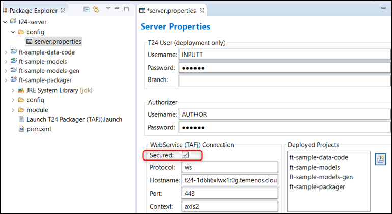
Don't forget to sabve the change: CTRL+S
b. Uncheck XML for Local Fields
Go to ft-sample-models > click right and select Properties > expand Design Studio > click Code Generation > expand All Categories > Uncheck XML for Local Fields (LT/RTL)
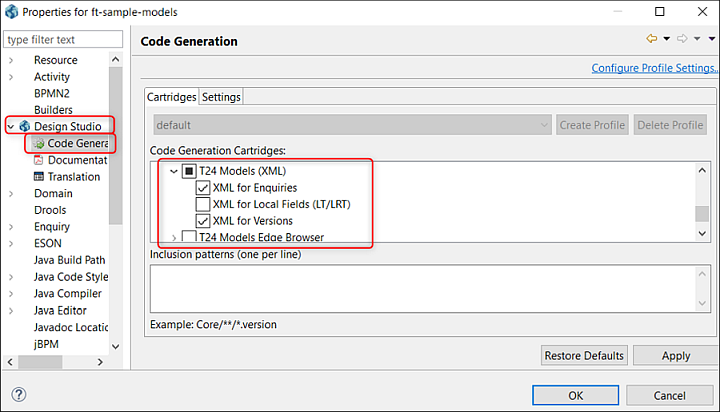
Click Apply and OK. Wait for the workspace to be built.
c. Create New T24 Server in Design Studio
A T24 Server is required in Design Studio to be able to import/export applications/enquiries/versions from/to your machine. Follow next steps to create and configure a T24 server:
On servers tab, click right and select Add New T24 Server.

A new screen is open. Type a name for the server(make sure it includes '-server' string) and click Next.

Choose connection type as T24 Server-Web Service and click Finish.
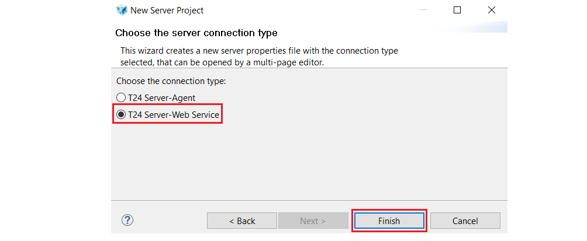After the server is created, the server.properties must be updated according to your sandox details:
-> In T24 User (deployment only) section, 2 users that you use to connect to your T24 environment must be introduced.
-> In WebService (TAFJ) Connection section, Secured box must be checked, Protocol must be set to ws value, Hostname must be set according to the hostname of your environment, Port must be set to 443 value and Context to axis2 value.
-> To get the hostname of your environment, log-in to your organisation in TCD Portal (Temenos Continuous Deployment), go to your enviroment page and click on the GO TO Application Endpoint for the T24 application. The BrowserWeb page of your environment is opened and from the URL of this page, you must select the part between https:// and /BrowserWeb/servlet/BrowserServlet.

Note
For future use, in case T24 Server is not visible, go to: Window > Show View > Other:
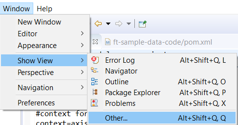
Type Server in the search bar and select Design Studio > Servers:

d. Toggle Project to TAFJ project nature
The Toggle TAFJ project nature action must be performed in order to be able to develop, compile and package jBC routines and to interrogate your environment database.
- Right click on data-code module and choose Toggle TAFJ project nature.

- In the next screen, import tafj_properties from Your_DEV_Path/TAFJ/conf folder, choose TAFJ_HOME as Your_DEV_Path/TAFJ folder and click Next. In the bellow picture, DEV_Path is set to C:\TemenosDEV.

- In the next screens, click Next and Finish.

- In the end, data-code module should be toggled.
- A .properties file was created for your project in Your_DEV_Path/TAFJ/conf folder.

Note
If TAFJ properties for your project must be updated, make sure you update the .properties related to your project from Your_DEV_Path/TAFJ/conf folder.
e. Create a T24 package based on your project
Take the available code (E.NOFILE.PP.INQ.MAIN.b) and copy paste into the following folder location: D:*Your_Design Studio_kit*\DS\workspace\ft-sample-data-code\src\Source\FT_Sample\Source\Private
In order to deploy this code into your environment, a T24 package must be created:
Go to packager module in Design Studio workspace, right click on Launch T24 Packager (TAFJ).launch and choose Run As > Launch T24 Packager (TAFJ).

Wait for the workspace to finish the build and check where the package was generated.
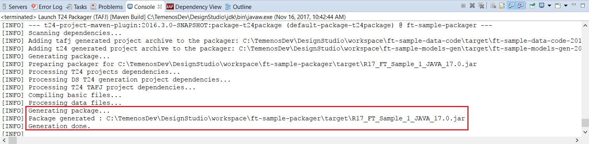
It should be located into the generated target folder: D:*Your_Design Studio_kit*\DS\workspace\ft-sample-packager\target
f. Deploy a T24 package to Environment
Note
Make sure you cloned in your local machine the GitLab repository of your environment. You can check this user guide to see how to clone an environment repository locally.
- Copy the generated package into the packages folder of the cloned GitLab repository from your local machine:
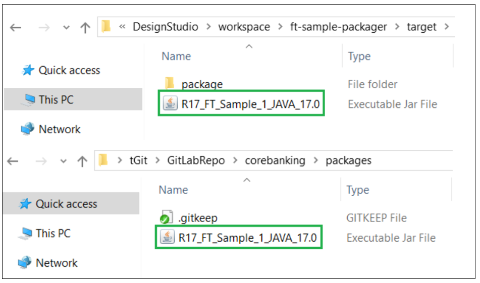 - If the package is a new file in the repository, the package must be first added to the repository:
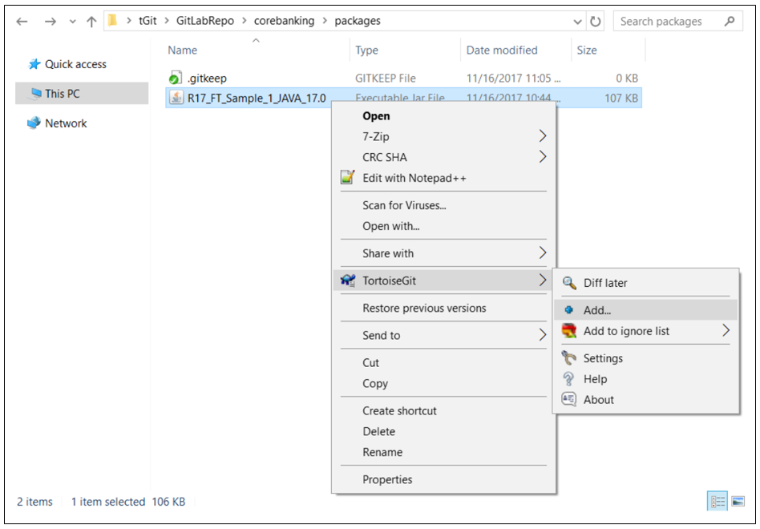 - A screen will appear saying that the file was added. Press Commit:

- A new screen will appear. Insert a comment in the upper window and then choose Commit.
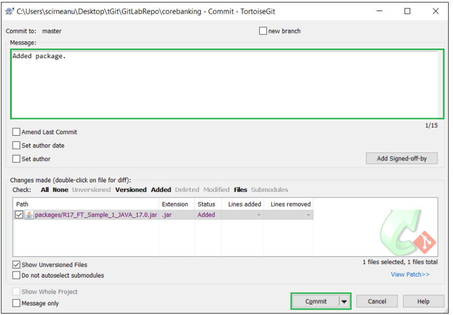 - A new screen will appear and choose Push.
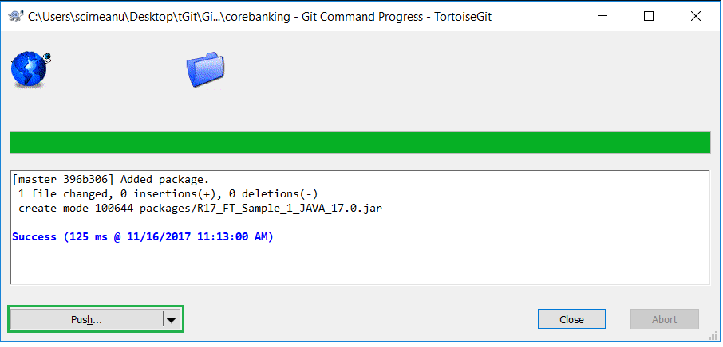 - A new screen will appear and choose OK.
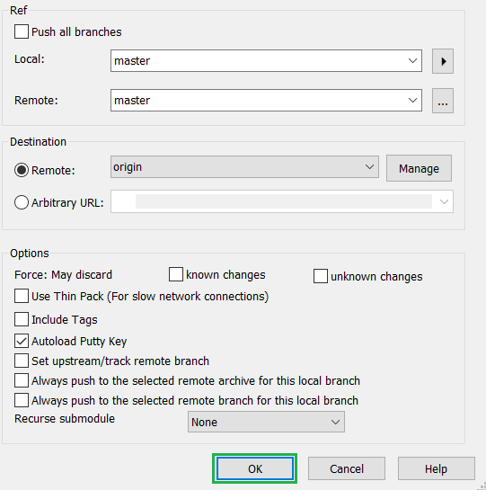 - A success message should be displayed. Press Close.

g. Trigger the deployment
- After commiting and pushing to Environment Repository all the features, you have to deploy them in your Environment.
- Login to your organisation, select your environment, locate the Repository Application and click the Deploy button.
For more details about the deployment, check the following steps.
4. Create/run the JBC Remote Debug Session in Design Studio
Go to Design Studio > RUN > Debug Configurations

Then click on JBC Remote > New Configuration
Make sure you have:
Container Project: your project name
Host: the DNS of your environment (you can take it if you click on your environment, then Go to Application)
Port: leave the default value as it is (don't change the value that appears on your screen otherwise debug will not work)
Click Apply and then Debug
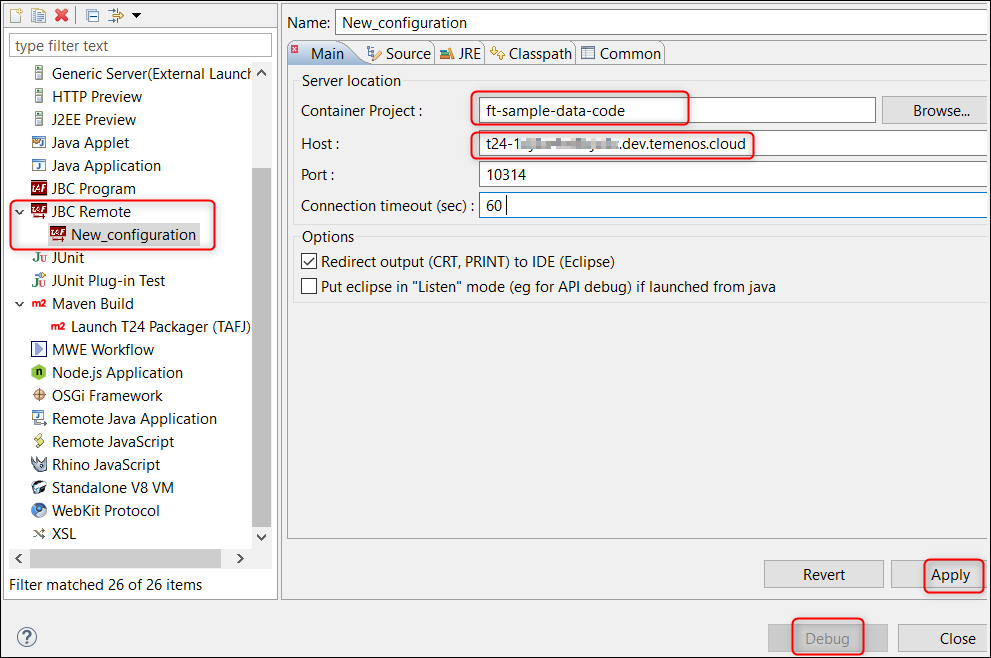
You will be able to see the debug data into the Console
5. Check the Debugging into T24
- You can add CRt in your code and you will be able to see it into the console:

- Also you can toggle a breakpoint in your methog and then trigger the debug as explained below to see the information in the console:
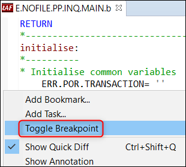
- Log-in to T24 and go to User Menu > Payment Hub > Payment Inquiries > Pending and Processed Payments > Pending Process Payments - Party Wise > click on Find button and the logs/breakpoints put in the previous method (E.NOFILE.PP.INQ.MAIN) should appear in debug session console.
- From this step further you can use the above buttons (the F5 - Step Into, F6 - Step Over and F7 Step Return - arrows) to continue the debug check.